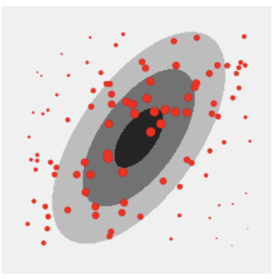

ImportanceSampling
Importance sampling (IS) is based on the idea of sampling from an alternate distribution and reweighting the samples to be representative of the target distribution (perhaps concentrating sampling in certain regions of the input space that are of greater importance). This often enables efficient evaluations of expectations \(E_{ \textbf{x} \sim p} [ f(\textbf{x}) ]\) where \(f( \textbf{x})\) is small outside of a small region of the input space. To this end, a sample \(\textbf{x}\) is drawn from a proposal distribution \(q(\textbf{x})\) and re-weighted to correct for the discrepancy between the sampling distribution \(q\) and the true distribution \(p\). The weight of the sample is computed as
If \(p\) is only known up to a constant, i.e., one can only evaluate \(\tilde{p}(\textbf{x})\), where \(p(\textbf{x})=\frac{\tilde{p}(\textbf{x})}{Z}\), IS can be used by further normalizing the weights (self-normalized IS). The following figure shows the weighted samples obtained when using IS to estimate a 2D Gaussian target distribution \(p\), sampling from a uniform proposal distribution \(q\).
{kind=link}
ImportanceSampling Class
The ImportanceSampling class is imported using the following command:
>>> from UQpy.sampling.ImportanceSampling import ImportanceSampling
Methods
- class ImportanceSampling(pdf_target=None, log_pdf_target=None, args_target=None, proposal=None, random_state=None, nsamples=None)[source]
Sample from a user-defined target density using importance sampling.
- Parameters:
pdf_target (
Callable) – Callable that evaluates the pdf of the target distribution. Either log_pdf_target or pdf_target must be specified (the former is preferred).log_pdf_target (
Callable) – Callable that evaluates the log-pdf of the target distribution. Either log_pdf_target or pdf_target must be specified (the former is preferred).args_target (
tuple) – Positional arguments of the target log_pdf / pdf callable.proposal (
Optional[Distribution]) – Proposal to sample from. ThisDistributionobject must have anrvs()method and a log_pdf (or pdf) method.random_state (
Union[None,int,RandomState]) –Random seed used to initialize the pseudo-random number generator. Default is
None.If an
intis provided, this sets the seed for an object ofnumpy.random.RandomState. Otherwise, the object itself can be passed directly.nsamples (
int) – Number of samples to generate - seerun()method. If notNone, therun()method is called when the object is created. Default isNone.
- run(nsamples)[source]
Generate and weight samples.
This function samples from the proposal and appends samples to existing ones (if any). It then weights the samples as
log_w_unnormalized) = log(target)-log(proposal).- Parameters:
nsamples (
int) – Number of weighted samples to generate.
This function has no returns, but it updates the output attributes
samples,unnormalized_log_weightsandweightsof theImportanceSamplingobject.
- resample(method='multinomial', nsamples=None)[source]
Resample to get a set of un-weighted samples that represent the target pdf.
Utility function that creates a set of un-weighted samples from a set of weighted samples. Can be useful for plotting for instance.
The
resample()method is not called automatically when instantiating theImportanceSamplingclass or when invoking itsrun()method.
Attributes
-
ImportanceSampling.samples:
Annotated[ndarray] Set of samples,
numpy.ndarrayof shape(nsamples, dimensions)
-
ImportanceSampling.unnormalized_log_weights:
Annotated[ndarray] Unnormalized log weights, i.e.,
log_w(x) = log_target(x) - log_proposal(x),numpy.ndarrayof shape(nsamples, )
-
ImportanceSampling.weights:
Annotated[ndarray] Importance weights, weighted so that they sum up to 1,
numpy.ndarrayof shape(nsamples, )
-
ImportanceSampling.unweighted_samples:
Annotated[ndarray] Set of un-weighted samples (useful for instance for plotting), computed by calling the
resample()method